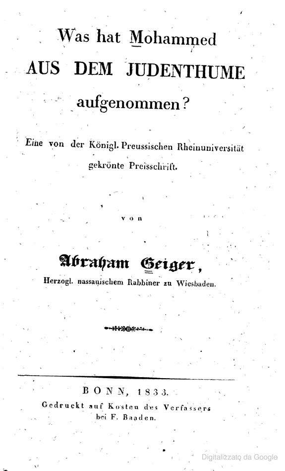

1:27:21 · 5 OPERE
Year-end summary between Israel and the United States.
Il filo del discorso
Il conduttore dialoga in inglese con Chaim Noll su Israele e l’Occidente alla fine del 2025. Noll considera lo scontro con l’Iran il passaggio decisivo dell’anno e interpreta la ripresa della vita quotidiana, le esperienze dei familiari e la capacità tecnologica israeliana come segni di resilienza. Nel suo bilancio trovano posto anche le perdite, i soldati feriti e le condizioni dei civili di Gaza: la fiducia nel futuro è la sua valutazione politica e personale, non una misura dell’assenza di sofferenza. Il confronto si concentra poi sull’antisemitismo, sulle università e sui media europei. Noll contrappone le proprie impressioni dell’Ungheria a quelle della Germania; il conduttore insiste sulle responsabilità culturali dell’Europa. I due discutono se il pregiudizio antiebraico sia inevitabile o possa essere contrastato dall’educazione. Il richiamo a uno studio di Abraham Geiger sulle fonti ebraiche del Corano serve a Noll per una lettura polemica del rapporto fra tradizioni religiose, che la scheda mantiene distinta da una descrizione dei fedeli musulmani. La ricerca di senso introduce Man’s Search for Meaning di Viktor Frankl e una discussione sulle prospettive dei giovani. Emergono due accenti: il conduttore teme un declino interno dell’Europa, richiamando Gibbon; Noll ritiene ancora possibile una reazione civile e politica. Le immagini di una società depressa o vitale sono metafore e giudizi dei parlanti, non diagnosi cliniche di intere popolazioni. Nella parte conclusiva, identità nazionale, Unione europea, difesa e innovazione si intrecciano con gli accordi energetici e le relazioni di Israele con Egitto, Grecia, Cipro e Somaliland. Il dialogo termina con auspici per il 2026 e con una differenza irrisolta fra la cautela del conduttore e l’ottimismo di Noll. Le note distinguono le previsioni dalle informazioni controllabili e correggono, con documenti primari, alcune affermazioni su Bondi Beach, occupazione dei territori palestinesi, difesa laser e riconoscimento diplomatico.
I libri nel discorso

Corano
Copertina: BUR Classici, edizione aggiornata
Edizione con introduzione, traduzione e commento di Alessandro Bausani, a cura di Layla Mustapha Ammar. Anno della ristampa non dedotto dalla copertina; nessuna edizione attribuita al video.
Riferimento ricavato dalla trascrizione automatica.
Passaggio 36:55 ↗ · Fonti e libro ↗
Bibbia
Copertina: San Paolo, 2014 · Nuova Versione dai Testi Antichi · edizione di riferimento
Riferimento ricavato dalla trascrizione automatica.
Passaggio 36:57 ↗ · Fonti e libro ↗
Was hat Mohammed aus dem Judenthume aufgenommen?
Frontespizio originale · Geiger, Bonn 1833: Bonn · F. Baaden · 1833 · frontespizio dell’esemplare Harvard digitalizzato da Google
Riproduzione integrale della pagina PP5 dell’edizione originale tedesca del 1833. È un frontespizio, non la copertina esterna; l’esemplare del video non è stato identificato visivamente.
Riferimento ricavato dalla trascrizione automatica.
Passaggio 37:04 ↗ · Fonti e libro ↗
Man’s Search for Meaning (Uno psicologo nei lager)
Identificazione probabile
Copertina: Copertina Beacon Press, 1 giugno 2006, ISBN 9780807014295, prefazione di Harold S. Kushner e postfazione di William J. Winslade. Edizione inglese di riferimento, non la copia o la traduzione ricordata dal relatore; il collegamento al titolo resta probabile.
Immagine autentica dell’opera, controllata visivamente; l’edizione di riferimento non è attribuita al filmato.
Riferimento ricavato dalla trascrizione automatica.
Passaggio 56:04 ↗ · Fonti e libro ↗
The History of the Decline and Fall of the Roman Empire
Identificazione probabile
Cofanetto dei volumi 1–3: Decline and Fall, Gibbon: Everyman, 16 settembre 1993, cofanetto dei volumi 1–3, 1952 pagine secondo l’editore. Opera originale pubblicata nel 1776–1788.
Fotografia ufficiale del cofanetto Everyman dei primi tre volumi, con immagine di rovine e dorsi bianchi e neri. Non è presentato come l’opera completa né come l’edizione letta dal relatore.
Riferimento ricavato dalla trascrizione automatica.
Passaggio 1:05:13 ↗ · Fonti e libro ↗